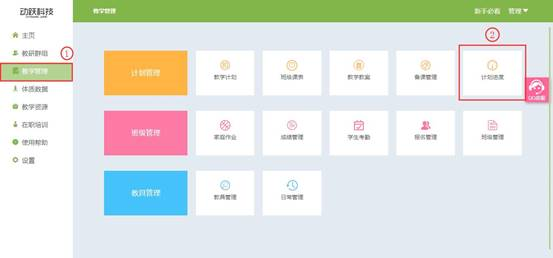

计划进度使用说明
视频教程：
教学计划中的<一键备课>已经对授课内容自动排序，若教师需要修改上课顺序，则在计划进度中对已选择的单元计划授课内容,进行授课顺序排序。
1. 登录动跃体育教学管理平台后，进入平台操作界面。
2. 点击进入教学管理 > 点击计划进度，如下图:

3.进入计划进度页面，由于<一键备课>直接生成了计划进度，所以直接进入页面即有该学期上课的进度排序，点击右边选项按钮，弹出修改按钮。

4. 点击进入修改页面，确认后会清空之前的设置，之前所选择的功能均不可使用，点击确认后，即可编辑授课顺序。
5.根据教师上课内容选择详细的课程详情，选择顺序即是授课顺序，点击添加按钮，选择课时内容，点击确定后，即该项内容选择成功。
6. 按照上诉方法，依次选择完成，计划进度就是本学期上课流程。
7. 本学期总课时 , 必须排满 , 才可以保存信息，如下图:
8. 计划进度完成后，需要发布出去才能使用，未发布状态不能使用，点击右边按钮弹出窗口后，点击发布，点击确认后即发布成功。